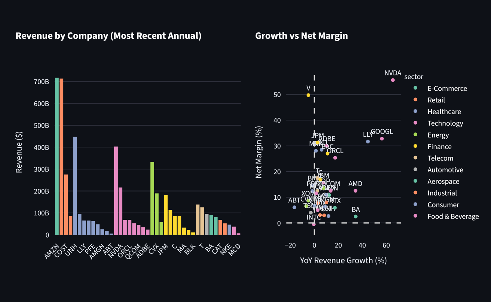
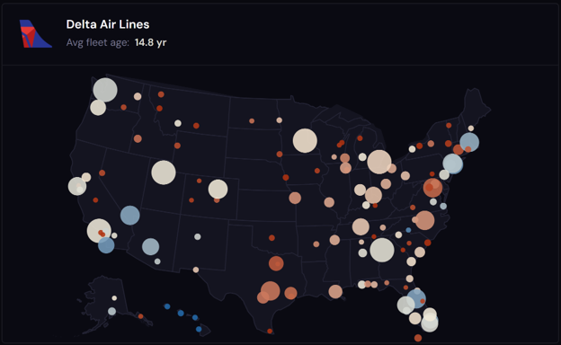
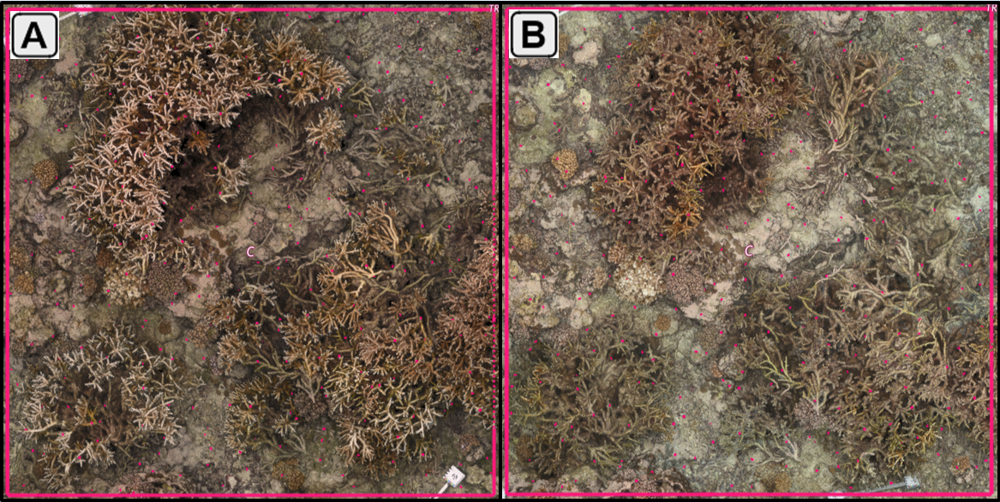
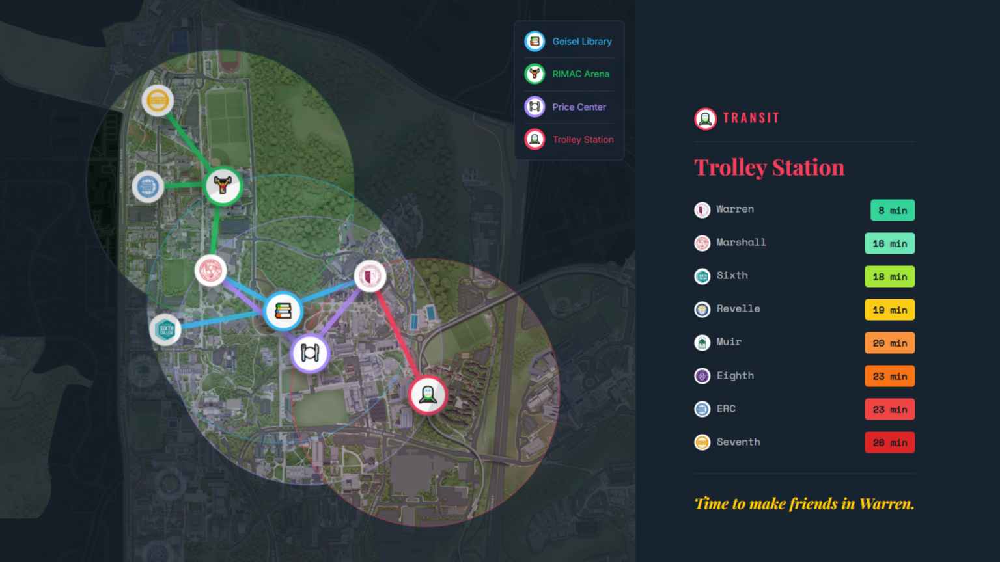
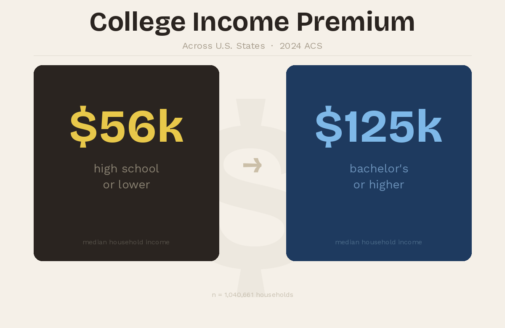
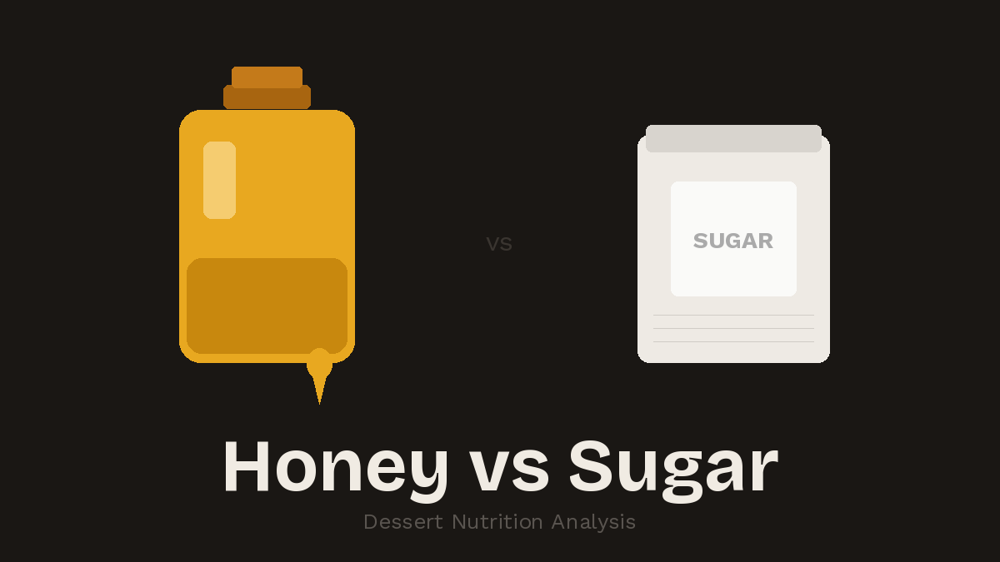
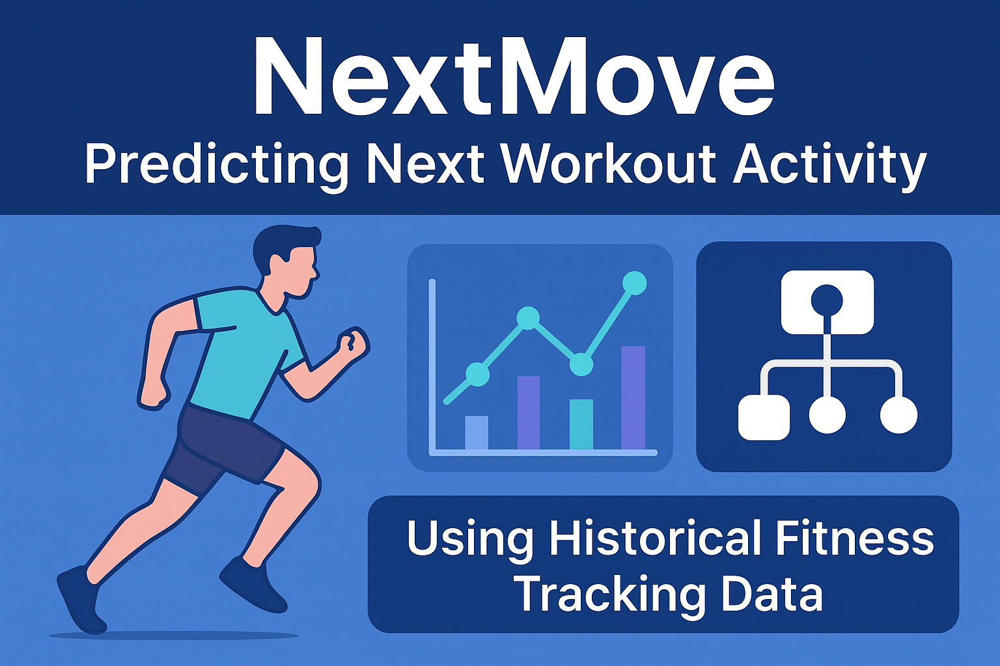
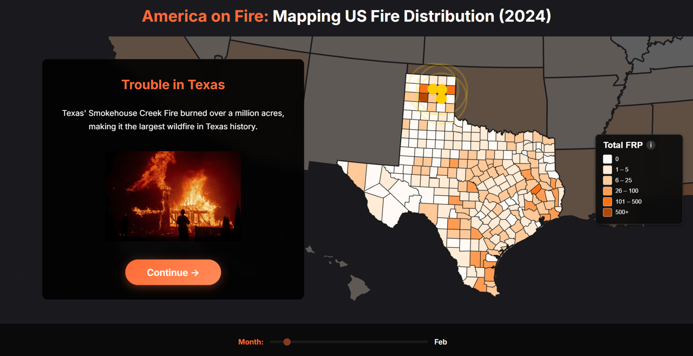
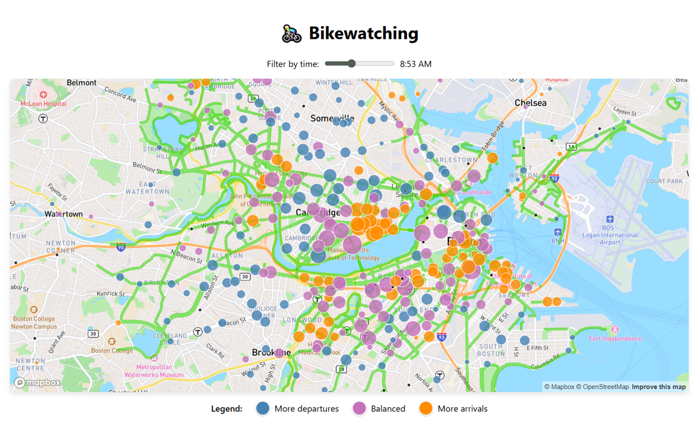

My Projects
Some things I've built — a mix of modeling, visualizations, and whatever else caught my attention.

📈 Public Markets Intelligence
Public Markets Intelligence cross-references live SEC EDGAR filings with real-time market data to surface annual and LTM financial comps for 41 large-cap companies, revealing how trailing earnings and quarterly momentum shift valuation multiples across sectors.

✈️ Who Gets the Old Planes?
Who Gets the Old Planes? cross-references 2.7 million domestic flights with FAA aircraft registration records to map narrowbody fleet age across U.S. airports and states, revealing how geography and market competition, not airline choice, determine how old a plane you board.

🐟 Palmyra Restoration Experiment
The Palmyra Restoration Experiment tracks a decade of benthic community monitoring across five coral restoration treatments at Palmyra Atoll, examining how transplantation design shapes long-term recovery trajectories and bleaching resilience through the 2023–2024 global coral bleaching event.

🔱 Is UCSD Walkable?
Is UCSD Walkable? is a scrollytelling data story exploring walking distances across UC San Diego's eight colleges, built with Leaflet, D3.js, and Scrollama, revealing how your college determines your relationship with everything on campus.

🎓 DegreeDelta
DegreeDelta analyzes U.S. census microdata to measure how the income advantage of a college degree varies across states. Using weighted ACS data and state-level aggregation, it estimates the education premium between college-educated and non-college households to reveal geographic differences in the financial return to higher education.

🍯 Sweet but Healthy?
Sweet but Healthy? analyzes real-world recipe data from Food.com to measure whether honey-based desserts are nutritionally distinct from sugar-based desserts. Using ingredient-level filtering and statistical testing, it estimates the nutrition premium across calories, sugar, and total fat to reveal whether the health halo around honey holds up.

🏃 NextMove
NextMove predicts a user's next workout activity using historical fitness tracking data. It models sequential exercise behavior as a multiclass classification problem, leveraging feature engineering, heuristic baselines, and a Random Forest classifier to uncover temporal and physiological patterns in real-world Endomondo logs.

🔥 America on Fire
America on Fire is an interactive data visualization of U.S. wildfires in 2024 built with D3.js and NASA MODIS data, highlighting spatial patterns, seasonality, and unexpected hotspots.

🚴🏼♀️ Bikewatching
Bikewatching visualizes Boston and Cambridge bike activity with interactive maps, showing Bluebikes station traffic, trip patterns, and bike lane networks using Mapbox GL JS and D3.js.
🌊 ENSOcast
Presented at the San Diego Undergraduate Tech Conference 2025, ENSOcast is a climate prediction platform that decodes the El Niño–Southern Oscillation phenomenon using machine learning and decades of NOAA data. It leverages Random Forest, XGBoost, 1D CNN, LSTM, and ensemble models, achieving >80% accuracy in predicting monthly ENSO phases.
⚡ U.S. Power Outage Severity
Analyzing power outages in the continental U.S. (2000–2016) to predict outage duration and assess key contributing factors using data-driven approaches. Achieved 80% accuracy with Random Forest models.
🌐 Geriasphere
Geriasphere is a user-friendly website that empowers middle-aged and senior citizens in India to navigate essential mobile apps. Created using HTML and CSS, the website features step-by-step video tutorials for apps like Uber, Google Maps, Zoom, and Gmail, with a clean visual layout and app-specific navigation.